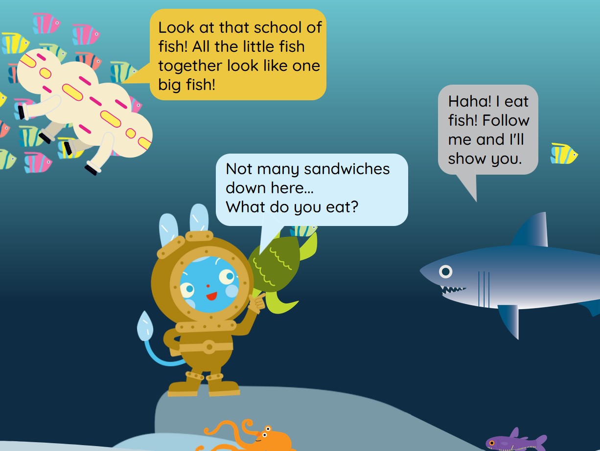

Howdy! I’m Lynx and I’m a 3rd year BSc (Hons) Computer Science for Games student at The University of Brighton. I love being part of a team that tackles the inner workings of a game to create a beautiful, well-functioning, and detailed final product that players can interact with. I am an efficient and strong programmer with passion for creating robust and creative games. I am also a hard worker who is incredibly time-efficient, having never missed a deadline in my education, and treat all my work with upmost care and precision.
I have acquired relevant skills and knowledge including in C++, C#, HTML, CSS, JavaScript, Unity & Unreal. I have been polishing my skills within these technologies over my studies in college & university over the past 4 years. I am currently seeking part-time work within the industry to apply and expand on the skills I have established within my studies and learn first-hand from industry professionals while continuing the last of my bachelor’s degree.
Okido Interactive E-Books
Pubcoder
HTML
CSS
Javascript
JQuery
Brighton Zoo

Within my internship at Brighton Zoo, my main role was to design and develop interactive e-books from Okido’s educational comics. Throughout my time there I developed two e-books: Underwater & Numbers using Pubcoder, JavaScript & jQuery. These books have been made available to their audience through the World of Okido app. Throughout creating these projects I carefully designed and implemented interactions which thematically fit the base comic and the theme to create the most enjoyable and fun experience for children. This internship and these projects were my first experience using Pubcoder, I focused heavily within my internship to learn more about how Pubcoder works and push the limits of its capabilities when creating these interactive e-books. I also furthered my skills in web development through these projects, though I focused on improving my skills within JavaScript and jQuery.
Find out more about the project here:
XCube2D Animation Subsystem
C++
SDL
University
2D
Game Engine
As an independent second-year university project, I extended XCube 2D is a simple game engine that has been developed using SDL 2.0 and C++. My subsystem extends the XCube engine to include an animation playback system which uses CSV files to display and play different animations on screen. On top of this it allows for different sprites to render at any frame rate that is equal to or lower than the frame rate of the game screen and stabilises these animations to create a smooth experience.
Within this project, I gained a strong technical understanding of how animation is achieved within game engines as well as the many different ways these problems can be tackled even when creating simple animations and features.
.
Find out more about the project here:
Homeward
Phaser
Javascript
Univeristy
2D
Platformer
Art
Homeward is a 2D, point and click, puzzle adventure game. The player assists a child’s favourite doll to return them to a place where they can always be found again in the child’s home. Each day the doll’s forgetful child leaves them around the house to be tripped over by their mum or torn apart by their dog! It’s your job to help them clean up and get back to safety! The game is split into three levels with each level increasing in difficulty as the player goes along. This was an independent university project for my second year when studying Phaser and JavaScript. I focused heavily upon character design, pixel art illustration & programming within this project.
Find out more about the project here:
The Hunt for Big Paw
Unreal
Blueprints
University
3D
Platformer
Modelling
The Hunt for Big Paw is a puzzle adventure game created within Unreal Engine with the use of Blueprints. The game follows Bone Retriever, a local archaeologist and zoologist, and Pointer, a renown hunter, on their investigation into the recent sighting of Big Paw. Throughout the game the player switches between both Bone Retriever and Pointer while investigating areas for clues about Big Paw and the hidden civilisation that it lives in. This was an independent university project for my second year when studying Unreal engine. I focused heavily upon story and character design as well as strong subsystem design and implementation.